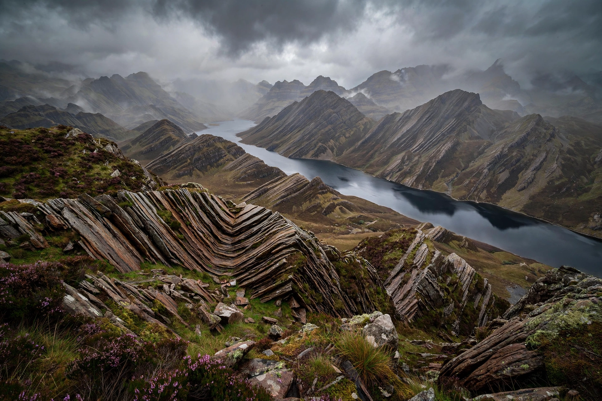

From Wikipedia, the free encyclopedia

| Caledonian orogeny | |
|---|---|
| Age | Ordovician to Devonian, c. 490–390 million years ago |
| Cause | Closure of the Iapetus Ocean; collision of Laurentia, Baltica and Avalonia |
| Present extent | Scandinavia, Scotland, Ireland, Greenland, and (continuing as the Acadian orogeny) the northern Appalachians |
The Caledonian orogeny was a mountain-building era recorded in the northern parts of Ireland and Britain, the Scandinavian Mountains, Svalbard, eastern Greenland and parts of north-central Europe. It occurred from the Ordovician through the Devonian, roughly 490 to 390 million years ago, and was caused by the closure of the Iapetus Ocean as the continents and terranes of Laurentia, Baltica and Avalonia collided. It takes its name from Caledonia, the Latin name for Scotland.
The orogeny proceeded in several phases. The Grampian phase (c. 470 Ma) recorded the collision of volcanic island arcs with the Laurentian margin in what is now the Scottish Highlands. The main Scandian phase (c. 435–425 Ma) marked the final collision of Laurentia with Baltica, thrusting enormous sheets of rock — nappes — over the Scandinavian margin and crumpling the rocks of northern Scotland along structures such as the Moine Thrust Belt. By the early Devonian the three continents had united into the single landmass of Laurussia, also known as the "Old Red Sandstone continent" for its characteristic terrestrial deposits.
When the Atlantic Ocean opened in the Cenozoic, the Caledonian chain was split apart: its fragments now form the Scandinavian Mountains, the Highlands of Scotland, and — across the Atlantic — the northern Appalachian Mountains of North America, where the related mountain-building is called the Acadian orogeny. The deeply eroded Caledonian basement also underlies much of the North Sea.